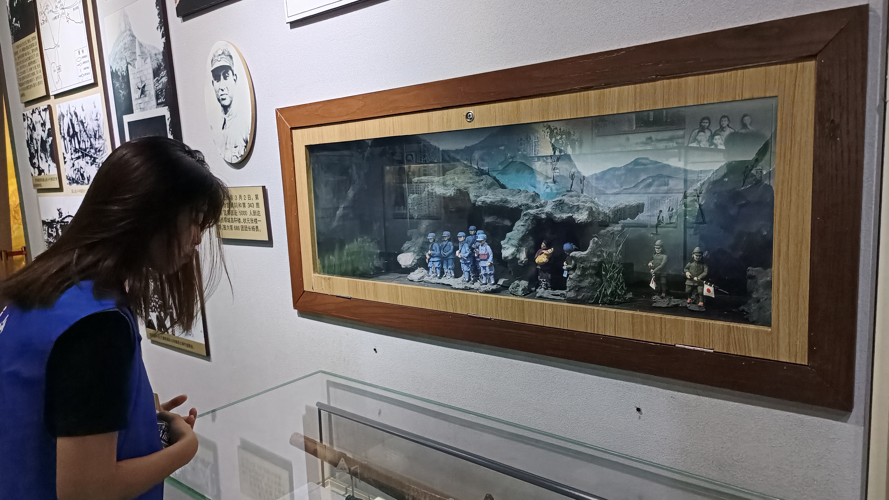
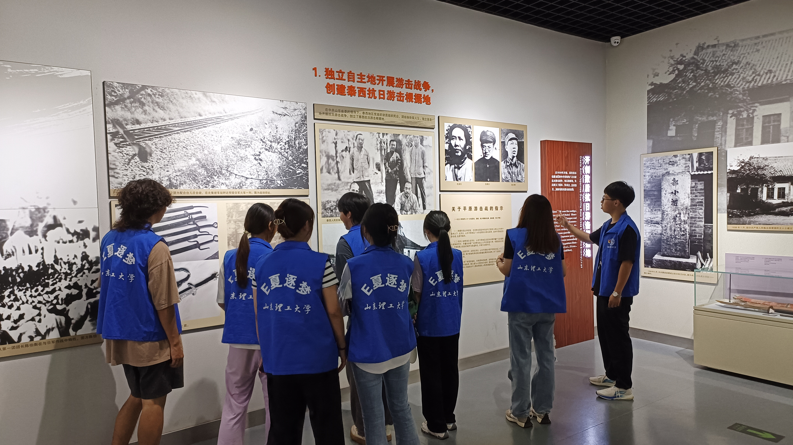
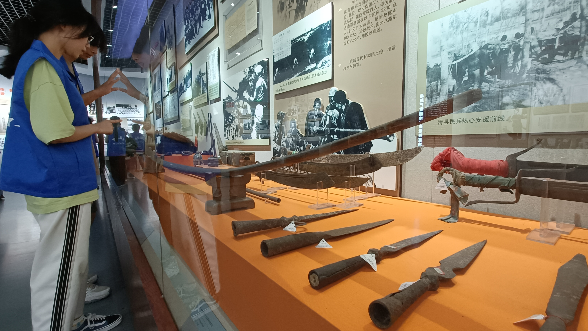

  
“重走革命来时路，牡丹遍地尽热土”——E夏逐梦实践团重走红色革命道路，传承先烈精神谱系
"黄河怒涛连天来，碧血丹心筑英魂”为重走革命道路，感悟红色精神，探访红色文化故地，强化青年一代的历史认同感、自豪感，在这片红色的土地上，E夏逐梦实践团踏上了寻找红色文化魅力的旅程，7月15日一同前往黄河入鲁第一市——菏泽市牡丹区向革命先辈学习“冀鲁豫”红色精神，筑牢信仰之基，补足精神之“钙”，提升自己的思考能力与实践能力，并学习冀鲁豫边区军民英勇奋进的革命精神。
冀鲁豫边区革命纪念馆是以中共党组织的创建，土地战争时期的革命活动为背景而建立，讲述了三、四十年代冀鲁豫边区党政军民在中国共产党的带领下不怕牺牲，前赴后继的革命精神。
冀鲁豫边区革命纪念馆作为中国革命胜利的重要见证之一，馆内陈列皆为珍贵的革命文物、历史资料。也是通过这些史实证据，实践团成员才能更深入了解那段震撼人心的军民抗战史。纪念馆大厅建筑风格庄严肃穆，以砖石结构为主，十分具有时代特色。走进纪念馆，实践团成员们依次走访了各大展馆，了解了冀鲁豫战事的发生过程以及历史意义。
冀鲁豫边区是中国革命历史上的一个重要地区，曾经是日军和国民党军队的必经之路，也是抗日根据地的中心地带。在漫长的革命岁月里，冀鲁豫边区的大批优秀儿女，为了民族的独立和人民的解放，受尽苦难艰辛，甚至抛头颅、洒热血,献出了宝贵的生命。作为当时鲁西南重镇的菏泽城，发生了很多可歌可泣的感人故事。
建立抗日根据地，革命先烈用生命夺取胜利。过程中，实践团成员们深感白色恐怖下斗争的艰苦，感受边区军民同全国军民浴血抗日英勇无畏的精神。从高举武装抗日旗帜，到开创敌后抗日游击根据地，八路军主力挺进冀鲁豫。在最困难时期，百姓自家门板，卸下来做船，军民鱼水深情团结一心，延续至今不丢弃。实践团成员们通过参观展厅图片资料、观看影片，目睹了冀鲁豫野战军开展游击队和土地改革、整党整军等一系列运动到最后迎接全国解放的过程，深刻感受到革命成果是多么的来之不易。
正如习近平总书记所言，“包括抗战英雄在内的一切民族英雄，都是中华民族的脊梁，他们的事迹和精神都是激励青少年前行的强大力量。”冀鲁豫边区革命纪念馆建在菏泽赵王河畔，向世人诉说着以菏泽为中心的冀鲁豫边区军民不怕牺牲、前赴后继、不屈不挠、英勇奋进的革命精神。革命先烈们用血肉之躯为后人留下了一处处启蒙民智、不屈抗争的红色印记，这些旧址和遗迹承载着菏泽人民勇于牺牲、甘愿奉献的革命精神，此次实践团参观学习就旨在挖掘这些红色故事，将红色文化发扬传播。
愈发了解革命历史就更加珍惜今天幸福生活的来之不易，这是实践团成员此次参观学习的最大感悟，后人无法亲身经历那段蒙尘的历史，即使现在看来璀璨夺目，因为那是用千千万万个中国人民的生命换来的胜利。
重走革命来时路，牡丹遍地尽热土。E夏逐梦实践团成员纷纷表示，参观这段可歌可泣的抗战血泪史让他们久久无法平静，将要加倍珍惜今天的幸福生活，让先烈们留下的精神财富得以传承发扬，用行动践行红色意志，坚定对党和革命先烈的敬意和崇敬之情，新时代的青年应该继承先辈们英勇无畏的精神，勇担时代大任，努力推进和普及红色文化教育，树立正确的价值观和人生观。